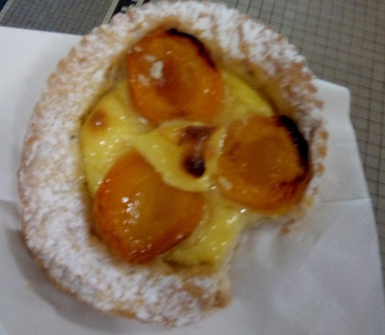
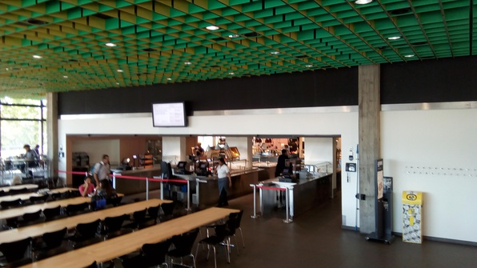
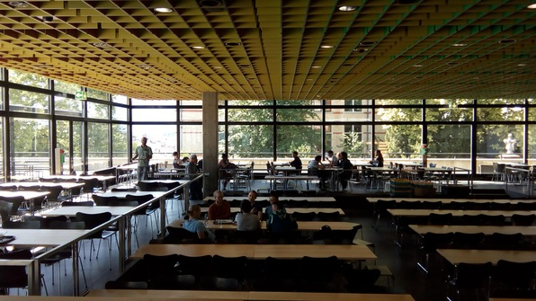
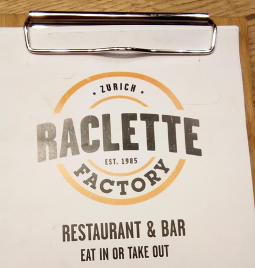
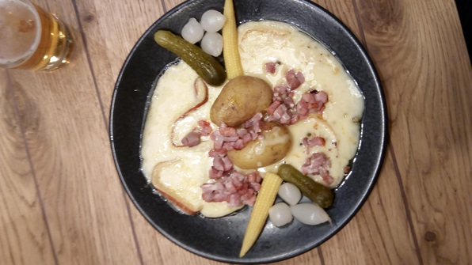
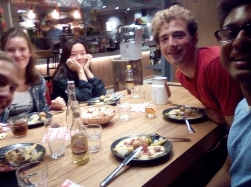
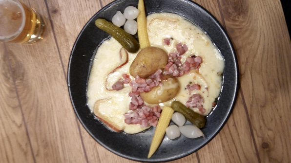
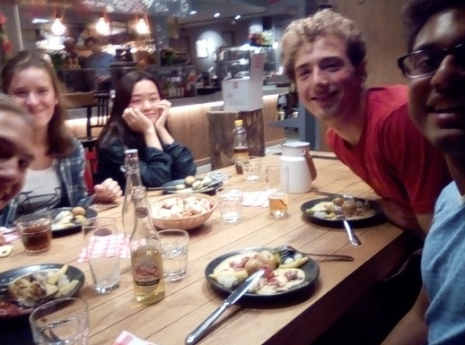

Sleep finally goes as normal! Delicious banana oatmeal, chat with Janna and Juyoung.
In German class we learn how to pronounce all the vowels, which is subtle. We learn more vocabulary.
First break: 
Lunch break Navi, Do Yoon, Julia Alex and I head to the main Mensa. We get to the less impressive looking Mensa, and Navi and I decide to look for the other Mensa. We haul up four flights of stairs and ask two guys before we realize the Mensa is actually below us. Retracing our steps, we find the place, an awe-inspiring conglomeration of buffet tables and meal vendors. I grab a big plate of bangers and mash and top it off for some per-weight salad greens for a total of 6 francs; Navi and Alex score also. We decide to grab a table, then go find Do Yoon and Julia. As we’re setting up at the table, Crystel, (not Christen), the Dutch girl from yesterday, finally finds us. Crystel and I go find Do Yoon and Julia, and then we all go to the upper level of the Mensa.


We chow down contentedly, I learn a bit more about Navi. He got referred to a Global Young Leaders conference by his international school and so got to see the USA and some other places. He’s now at Imperial College London. I found out later his dad runs some clothing factories :) The fellow is extremely cheerful and energetic and chews my ears off with little interesting things.

Navi loses his bag, or thinks he does, so I search with him for a bit. Do Yoon and Julia finally run off to try to get their residence permits, then they come back when they realize the office isn’t open. Finally Navi realized the bag must be in his classroom and we walk back to lessons. On the way, Christen, Do Yoon, Navi and I catch a sweet view on the balcony.
Finally, we return to the German lesson! It concludes with a fun game, a Quizlet.live vocabulary stomp (@Iz leggo boys). My team, featuring SpenceTheMensch, squashes the opposition, going 2/4 with another legion of doom and shutting out all the other teams.
Do Yoon and Navi go to get their residence permit, and I go in the opposite direction to get mine (different districts). It’s an incredibly lovely walk there:


Why don’t we have these in the States?!

Get the permit, pending me sending them a proof of my scholarship (for some reason this reduces my permit fee?!) Actually, they were going to charge me the full fee, until I decided to pay with cash and pulled 200 francs out of my pocket, citing my scholarship, then they were like, “oh, you get a discount boi.” Weird.
Return to Culmannstrasse, do a little networking to figure out whether to meet Navi et al., then head up to the roof! What a view:

I mean, is this BBQ time or what?! Then meet Navi and Do Yoon and Crystel and Alex at the HB. I have no wifi there so it is touch and go for them to see me at the prearranged “Kebab shop”. In fact, I run to a Starbucks for wifi, fail, then head back and just see them passing the kebab shop. #legendary.
We walk along the river, stopping numerous times to chat. Hang out on the lake. Navi and Alex try to decide where we go for dinner, I recuse myself. We end up at “The Raclette Factory”. (@Grandma next new thing?). I finally relax and allow myself to System-1 bounce Navi’s intense conversation and soak in the camaraderie. I’ll let the pics say their thousand words!
   
 
Return to Culmann, talk to Adina, send email and messages, write this log, and hit it!